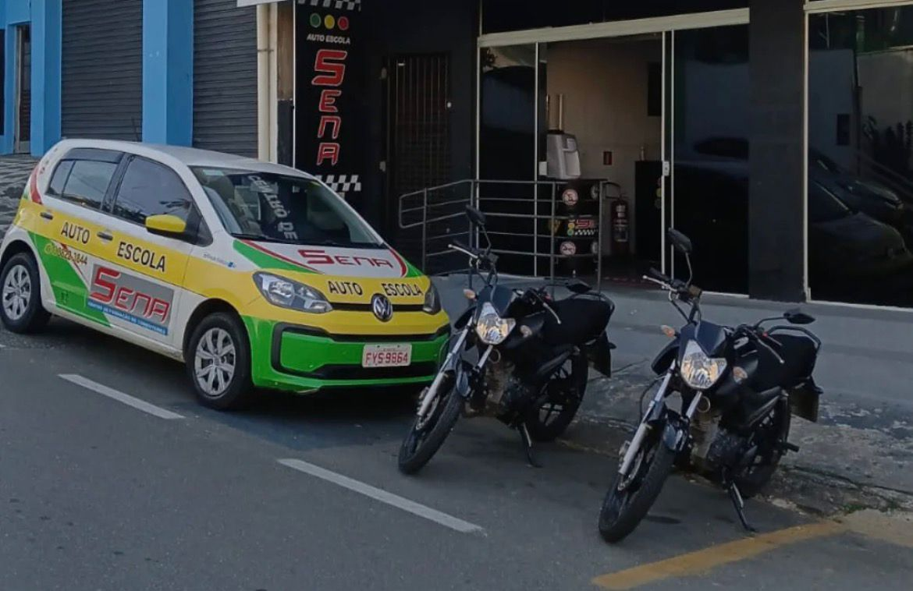

Como a Tecnologia e a Formação de Condutores Salvam Vidas: O Futuro da Mobilidade Inclusiva
A segurança nas vias urbanas é um dos maiores desafios das cidades modernas. No entanto, estamos entrando em uma nova era onde a combinação entre tecnologia de ponta e uma formação de condutores humanizada está transformando as ruas em espaços mais seguros, especialmente para as parcelas mais vulneráveis da população: idosos e pessoas com deficiência.
A grande estrela dessa transformação é o Semáforo Inteligente. Diferente dos modelos convencionais, que operam apenas com ciclos de tempo fixos, esta tecnologia utiliza sensores para adaptar o trânsito à necessidade humana real.
Porém a tecnologia, por mais avançada que seja, não funciona sozinha. Então é aqui onde entra o papel crucial das autoescolas. A formação de novos motoristas precisa evoluir junto com as cidades inteligentes.
Salvar vidas no trânsito é um esforço conjunto. O nosso projeto de Semáforo Inteligente representa o cérebro dessa mudança, enquanto as Autoescolas Parceiras representam o coração. Juntos, tecnologia e educação estão construindo um futuro onde o direito de ir e vir é respeitado para todos, independentemente da idade ou condição física.
